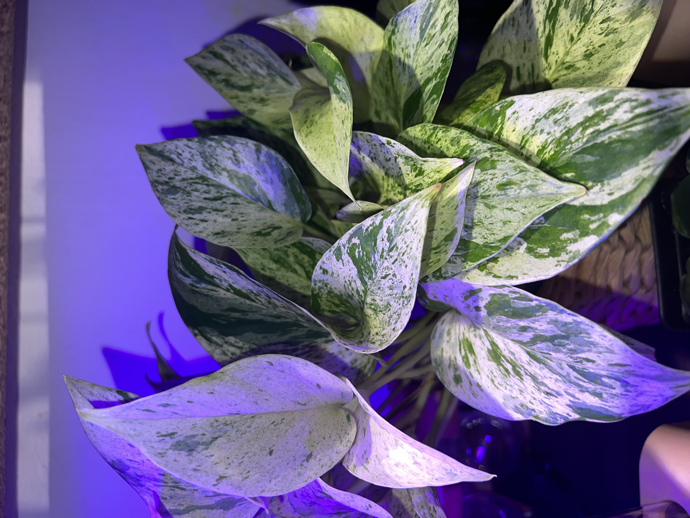
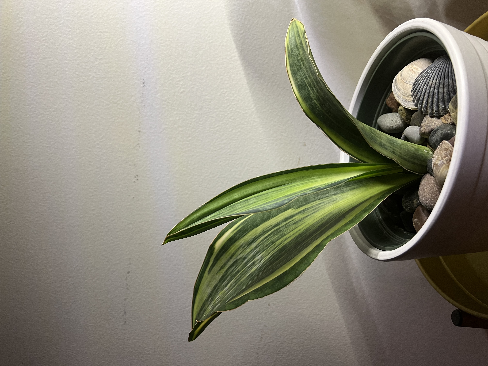
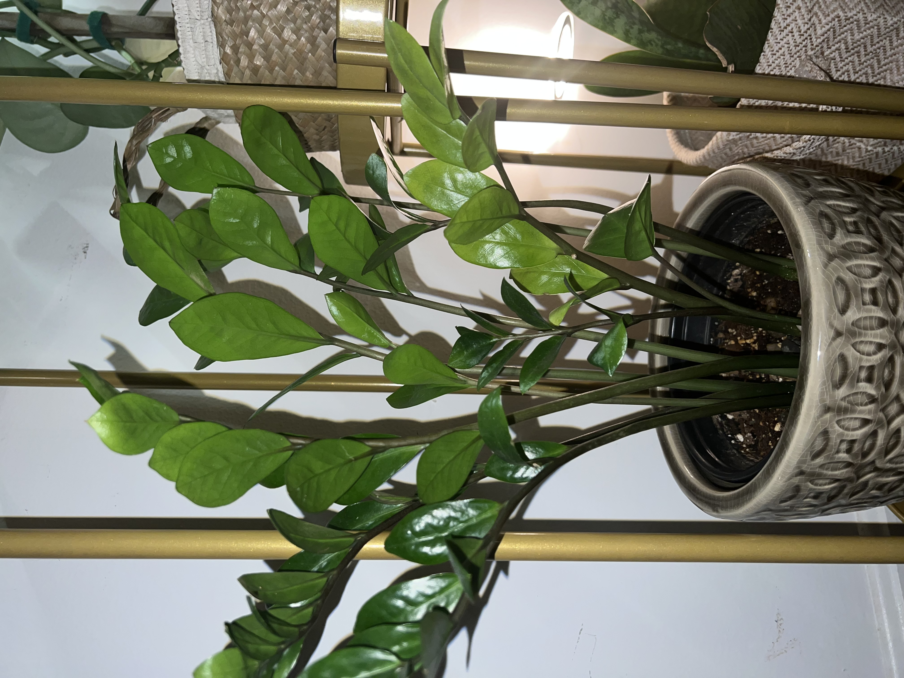
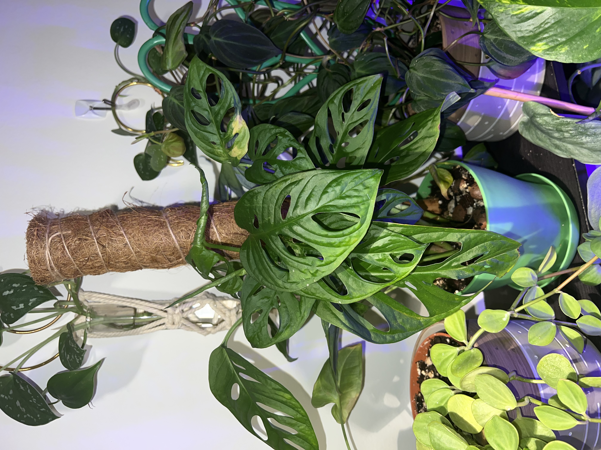
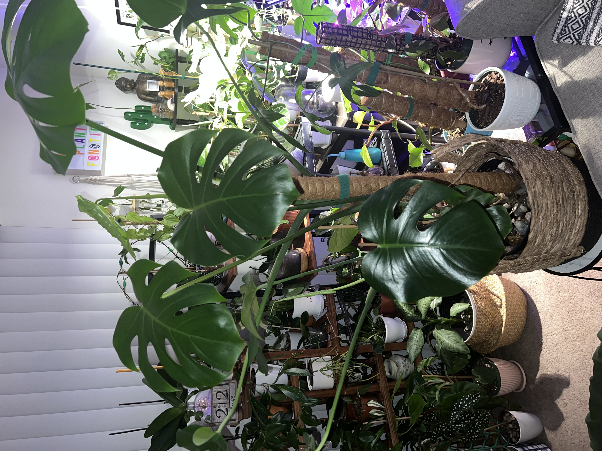

SINDHUJA GHALE
Undergraduate Student - CS Major
My name is Sindhuja Ghale. I am a rising senior at the University of Massachusetts Lowell. I am majoring in Computer Science. In my free time, I enjoy cooking and watching K-dramas, and anime. I also love taking care of my plants.
| Name | Image | Description |
|---|---|---|
| Marble Queen Pothos |  | Epipremnum aureum commonly known as Marble queen pothos is a vining plant with cream to yellow variegation. This beautiful plant comes from French Polynesia. It is a tropical aroid plant that belongs to the family of Araceae. Pothos are considered drought-tolerant plants which makes them easy to take care of. |
| Whale Fin Sanseviera |  | According to the University of Florida, the Whale Fin Snake plant is the Sansevieria masoniana common name. It belongs to the Agavaceae family. You find the particular plant in Central Africa, mainly in the Congo. Sansevieria Whale Fin plant is a slow grower and perfect to place in an indoor setting. |
| ZZ |  | ZZ native area are Kenya and South Africa.ZZ houseplant is easy to care for and has simple needs to survive and thrive. You would not have any problem or issue in taking care of the plant if you follow the proper watering method, give it adequate sunlight, and observe appropriate soil drainage. ZZ plants do not have any complex techniques for caring for it. |
| Monstera Adansonii |  | Monstera Adasonii or the Swiss-cheese plant vining perennial from the numerous Monstera varieties can grow up to 60 ft tall, so you better prepare some stake or sticks for it to cling to. This beauty has become a famous indoor plant due to its aesthetic vibe. |
| Monstera Deliciosa |  | This species is a stunning plant to grow, and one that’s a favorite among plant collectors and plant enthusiasts alike. The monstera albo is the variegated version of the Monstera deliciosa. Hence, it came from the natural mutation of the plant when reproduced. Therefore, each leaf is different, and it is like a surprise package until the foliage opens. |
Thank you for visiting this page.
Please feel free to contact me for collaboration.
Links are attached in the homepage.


Copyright © by Sindhuja Ghale